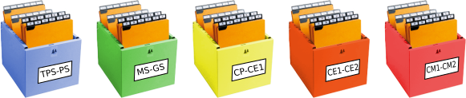

Fonctionnement de la bibliothèque d'école Calandreta Pau
La bibliothèque fonctionne avec très peu de moyen humain. Des bénévoles assurent le traitement des acquisitions des livres, ainsi qu'un peu de rangement. Les utilisateurs de la bibliothèque (élèves et enseignant) doivent pouvoir la faire vivre quasiment en autonomie (donc gérer les emprunts et le rangement).
Inventaire des livres
L'inventaire est stocké dans le fichier inventaire.tc à la racine du projet.
Les données y sont stockées au format XML, puis compressées avec ZIP.
C'est un fichier exploitable par le programme Tellico.
Consultation de l'inventaire
Le programme Tellico, disponible sur l'ordinateur de la bibliothèque de
l'école, permet de consulter l'inventaire et d'y faire des recherches. On peut
le lancer depuis le bureau de l'ordinateur, ou bien par un double clic sur le
fichier inventaire.tc.
Le catalogue peut aussi être consulté en ligne sur le site internet de l'école,
à l'adresse http://calandreta-pau.org/bibli/. C'est le script web.sh qui
génère la page internet à partir du fichier inventaire.tc
Ajout d'un livre à l'inventaire
Pour ajouter un livre à l'inventaire, il faut saisir manuellement les données qui le concernent dans le programme Tellico.
- [ ] TODO: ajouter une capture d'écran
Les données à renseigner pour un livre sont les suivantes:
- Titre : Ce champs dispose de l'auto-complétion pour éviter les doublons dans l'inventaire. Si le titre que l'on souhaite saisir existe déjà, il faut annuler la saisie d'un nouveau livre, chercher le livre existant dans l'inventaire et mettre à jour le nombre d'exemplaire.
- Sous-titre (facultatif)
- Auteur
- Editeur
- Langue
- Genre : Parmis Album; BD; Contes; Documentaire; Poésie; Roman; Théâtre
- Cote : La cote de rangement du livre, scotché en bas du dos.
- Nb ex : Le nombre d'exemplaire du livre
- Nb. fich. manq. : Le nombre de fiches qu'il manque pour ce livre. Le programme d'impression des fiches utilise ce nombre et le remet à zéro.
- Nb. cotes manq. : Le nombre de cotes qu'il manque pour ce livre. Le programme d'impression des cotes utilise ce nombre et le remet à zéro.
Lors de l'enregistrement du livre dans l'inventaire, les données suivantes sont automatiquement rajoutées pour le livre:
- N° : Le numéro d'inventaire du livre
-
Créé le : La date à laquelle le livre a été ajouté à l'inventaire.
-
[ ] TODO: préciser avec un warning qu'il faut écrire le numéro d'inventaire sur le livre après enregistrement.
La fonction de récupération en ligne de données bibliographique n'est pas utilisée pour le moment. Voir les Questions/Réponses sur ce sujet
Sauvegarde de l'inventaire
Le script github_backup.sh permet de sauvegarder le fichier inventaire.tc
sur github. Anacron lance ce script tous les jours où quelqu'un allume
l'ordinateur
Gestion des emprunts
La gestion des emprunts de livre ne se fait pas informatiquement, mais grâce à des fiches. La fonction de gestion des emprunts de Tellico n'est pas utilisée.
Nous considérons qu'un livre est prêté à une classe (ex: la classe de CP), pas à un élève en particulier. Dans la bibliothèque il y a donc une boite pour chacune des cinq classes de l'école.

Dans la boite d'une classe se trouvent les fiches de tous les livres empruntés par les élèves de cette classe.
Cette organisation n'a pas été choisie faute de moyen informatiques pour gérer les emprunts, mais pour permettre un fonctionnement courant de la bibliothèque avec très peu de moyen humain. Voir les Questions/Réponses sur ce sujet.
Traitement des acquisitions de la bibliothèque
Les nouveaux livres qui sont acquis par la bibliothèque suivent le processus suivant.
- Nettoyage.
- Réparation si nécessaire.
- Couverture.
- Ajout d'un bandeau horizontal de couleur en haut du dos si le livre n'est pas
en français
- occitan: rouge.
- langue étrangère : jaune.
- bilingue français/occitan ou français/étranger : le bandeau est rouge ou jaune selon la langue, mais il est barré d'un trait blanc sur toute sa longueur.
- Ajout d'une pochette en fin de livre, qui permet de glisser la fiche.
- Inventorier le livre utilisant le programme Tellico. Pour les noms d'auteur,
nous adoptons une saisie sous la forme
Nom, Prénomséparés par des;.
Par exempleDupont, Jean; D'Agobert, Roger
Une fois que le livre est enregistré dans l'inventaire, il faut recopier le N° d'inventaire sur la page de titre du livre.- [ ] TODO: mettre un symbole de warning et un lien vers
Ajout d'un livre à l'inventairede ce document qui
- [ ] TODO: mettre un symbole de warning et un lien vers
- Impression et mise en place de la fiche. L'impression se fait grâce au
raccourci
Impression des fichesà la racine du projet. Un double-clic sur ce raccourci lance le script impression.py avec le paramétrage nécessaire. - Impression et mise en place de la cote. L'impression se fait grâce au
raccourci
Impression des cotesà la racine du projet. Un double-clic sur ce raccourci lance le script impression.py avec le paramétrage nécessaire. - Rangement dans le rayon adéquat.
Pour chaque étape, un emplacement est réservé dans le rayonnage. On y trouve tous les livres qui n'ont pas encore passé cette étape. Après avoir traité le livre, on le range dans le rayon de l'étape suivante à effectuer pour ce livre.
- [ ] TODO: rédiger un document spécifique à l'impression des fiches : où se trouve le pdf, comment paramétrer l'imprimante, que faire si des fiches sont mal imprimées, etc...
- [ ] TODO: intégrer une vidéo de démonstration: "Comment couvrir".